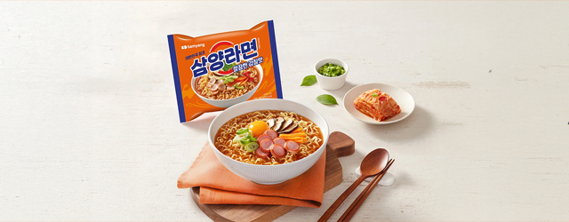

브랜드
브랜드
삼양라면
브랜드 소개
라면의 원조, 삼양라면은
기본에 충실한 삼양의 대표 브랜드입니다.
Brand Story
대한민국에 처음으로 라면을 선보이다.삼양식품의 창업주인 전중윤 회장은 60년대 초 우연히 남대문 시장을 지나가다 사람들이 한 그릇에 5원하는 꿀꿀이 죽을 사먹기 위해 길게 줄을 선 것을 보고 서민들의 배고픔을 해결해야겠다고 결심하였습니다.

6.25 전쟁으로 황폐하고 식량은 부족한 시기에, 고 전중윤 명예회장은 남대문 시장에서 5원짜리 꿀꿀이죽을 먹기 위해 장사진을 친 배고픈 국민들을 목격하고
국내 식량 문제를 해결하고자 1963년 9월 15일. 우리나라 최초의 라면 ‘삼양라면’을 개발하였습니다.
당시 삼양라면의 가격은 10원으로, 저렴한 가격임에도 국민의 배를 든든하게 채워주었습니다.

↑ 삼양식품 서울 공장을 방문한
전중윤 회장
이러한 삼양라면은 이제 대한민국을 넘어 해외에서도 사랑을 받고 있습니다. 최초에 머무르지 않고 더 나아가 최고의 맛을 향한 노력 삼양라면이 오랜 시간 사랑 받아올 수 있었던 비법입니다.
History
시대에 따라 달라진 포장지의 변천사
1963년 우리나라 최초로 출시되어 지금까지 함께 해온 ‘삼양라면’의 포장지는
당시 닭 그림을 형상화한 디자인에서 1970년대 초반부터 현재와 같은 패턴인 주황색 바탕에 빨강색 원 형태로 교체되었습니다.
삼양라면만의 고유한 이미지를 유지하면서 동시에 현대적인 감각을 전하기 위해 꾸준히 새단장 해왔습니다.

1965년